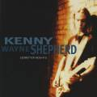

КЕННИ УЭЙН ОВЧАРКА. Андрей Евдокимов.

В 1995г. Kenny Wayne Shepherd выпустил дебютный альбом Ledbetter Heights на лейбле Giant Rec., с тех пор сменившем названием на Revolution Rec. По счастью для дебютанта, Гигант-Революционер входил в корпорацию BMG, вовремя унюхавшую хит и раскрутившую пластинку как надо. В результате альбом Ledbetter Heights занял на пять месяцев вершину блюзового хит-парада Billboard плюс отправил несколько сорокопяток в верхнюю десятку рок-синглов. (Между прочим, мнение Евдокимова, что покоряют блюзовые чарты наиболее общеупотребительные, а не самые выдающиес альбомы - еще никем научно неоспорено. Что, конечно, не умаляет достижений KWS.)Результат для дебюта впечатляющий, но если учесть, что блондинистому гитаристу - 18 лет... А вообще впервые выступить перед публикой - на сцене ньюорлеанского фестиваля - он вышел в 13 лет... А в 14 - гастролировал с собственным блюзбэндом... Ой, вундеркинд!
Отец KWS - музыкальный продюссор клубного уровня, работал на музыкальное радио, организовывал кое-какие гастроли. Говорят, юный Кенни приставал у нему, требуя гитару, пока не добился своего. Отец же мечтал для сына о карьере юриста, счетовода - в общем, об увлекательном, полном опасностей и приключений деле, а вовсе не о скучном от вечера к вечеру лобании по клубам. В книжечке к альбому Ledbetter Heights есть фотографи девятилетнего белобрысого Шеппарда, ростом как раз с гриф той гитары, которую он держит в руках - душераздирающее зрелище. (К тому же он там очень похож на гадкого мальчиша-плохиша Калкина. Бррр.)
Шеппард утверждает, что он - самоучка; выучилс всему, слушая блюз по радио и на пластинках. Параллели в его игре со наследием Стиви Рея Воэна - очевидны. (Ну да кто из нынешнего поколени новых гитаристов может избежать этого влияния.) Однако во многих отношениях, например, что касается ритмической организованности - тут Шеппарду еще очень далеко до покойного маэстро. Шеппард имеет самое непосредственое отношение к остинскому музыкальному кружку; а Дойл Брэмхэлл, старший товарищ Стиви Рея, помогал ему и советом и делом. По семейной легенде, сам Воэн усаживал 7-летнего Кенни Шеппарда на усилитель во врем одного из своих концертов. И куда только смотрели родители? Естественно, на всей громкости воэновские гитарные приемчики проникли глубоко в кровь юного беззащитного существа. И вот - плоды.
Дебютный альбом Шеппарда состоит по большей части из оригинального материала, есть лишь два блюзовых стандарта. Один - кантри-блюзмэна Букки Уайта, другой - Хаулин Вулфа. Воэн часто обращалс к блюзам Хаулин Вулфа и этот подход к их интерпретации у Шеппарда - точно от него. Короче, мы получили еще одного архиэнергичного гитариста-виртуоза, работающего в тяжелом саунде. Одно отличие от прочих: похоже, парень и правду талантлив. Подождем с окончательными выводами до следующей его крупной работы.
Дебютный альбом носит в названии посвящение кантриблюзмэну Leadbelly (H.Ledbetter). Пока что малыш Уэйн не поет, для этого дела на запись альбома наняли человека по имени Corey Sterling. Он не молод, бел, но дело свое знает добре.
KWS играет на Fender Stratocaster 1961, есть еще три Страта поновей, в том числе из серии Stevie Ray Vaughan. А теперь и его самого берет под свое крыло Fender и будет выпускать гитару именной модели.
В 1993г., 16 лет от роду, KWS принимал участие в довольно странном проекте: Jewel Spotlights the Blues Vol. I&II. Он "добавлял" гитару к записям покойных блюзовых гигантов, а именно в песни Sex Appeal и New Way Of Love - Willie Dixon’a.
Летом 1996г. в стадионном турне легендарных Eagles по Европе именно Кенни Уэйну Шеппарду поручено было открывать концерты.
В звуковой дорожке к приятному фильму Michael KWS исполняет The Spider and the Fly на пару с живым классиком чикагской гармоники James’oм Cotton’ом.
Сейчас KWS засел в студию и обещает второй альбом к началу осени 1997г.
5 мая 1997г. (по слухам) KWS должен был принимать участие в праздновании дня рождения James’a Brown’а, вместе с Blues Brothers и ZZ Top.
KWS приглашен четвертым в тур трех "великих гитаристов" (как заявлено организаторами): Joe Satriani, Eric Johnson, Steve Vai.
Идите к овчарке на английском (с полным собранием текстов и новейшими новостями):
http://ugalumni.uoguelph.ca/~bswitzer/kws/index.html
http://www.albino.com/hrbjr/kws.htm или http://www.albino.com/hrbjr/links.htm
http://www.fgi.net/~dbwatty/kws.htm
Что говорит сам KWS:
Удивлен ли я?.. Ну, отчасти. Довольно удивительно, как быстро все случилось, как многим людям нравится блюз... Это меня очень будоражит.
Каждый раз, когда ты играешь, - это важно. И все равно, маленький ли это клуб, или арена стадиона на тысячи и тысячи человек - главное: ты отвечаешь за связь. Блюз - о реальной жизни, о реальных чувствах. Ты можешь заставить людей понять это и почувствовать.
БиБиКинг однажды сказал мне, не важно, что ты делаешь, ты не можешь отдавать 99% или полпроцента. Ты должен отдавать 120% каждый раз, когда играешь. Это почти то же, что сказал мне Chris Layton, знаете, барабанщик Stevie Ray Vaughan’a. Он сказал мне, каждый раз, когда Стиви Рей брал гитару, он играл как будто это был его последний шанс. И ты должен делать так всегда. Подстегивать себя. Стараться показать все, на что способен - каждый раз, когда играешь.
Я не думаю, что петь - абсолютно необходимо. Но это не лишнее. Множество гитаристов обходились без пения. И Jimi Hendrix не хотел петь поначалу. И Stevie Ray Vaughan поначалу не хотел петь. Но если ты делаешь все - только тогда ты действительно все контролируешь. А когда есть кто-то еще, ты вынужден отдавать часть рычагов управления. Так что, все зависит от того, какую ты хочешь занять позицию. Я для себя хочу постепенно больше войти в эти дела. Я еще не вполне чувствую себя удобно в отношении голоса, но я работаю над ним. Надеюсь, будут улучшения.
Когда мне было лет семь, мы ходили послушать Stevie Ray Vaughan’a.Он поднял меня и усадил на ящик от своего усилителя скраю сцены. И просидел там весь концерт, наблюдая за его игрой. И я попался на крючок. Я сразу после этого начал выпрашивать у отца гитару. И в конце концов получил ее - через полгода.
Ты слушаешь всех этих разных артистов, и выбираешь тех, кто действительно попадает тебе в точку. Я много слушал Muddy Waters’a, и некоторыми из других мной любимых - это Albert Collins, Howlin’ Wolf, B.B.King, Jimmy Vaughan и Stevie, конечно. Но должен сказать, что Albert King был тем, кто произвел на меня наибольшее впечатление. Он был так необычен. У него было нечто только его собственное.
Я хочу, чтобы люди не просто слушали мою музыку. Я хочу, чтобы они ее слышали. То, что людям нравится то, что я делаю, это для меня высшее удовлетворение. Мне кажется, что сейчас происходит большой взрыв в основанной на блюзе музыке. И это будоражит. Я рад быть его частью. Я хочу мое поколение завести на это. Я хочу, чтобы для него блюз оставался живым.
Ledbetter Heights (713k)
(Let Me Up) I've Had Enought (314k)
I'm Leaving You (Commit A Crime) (491k)